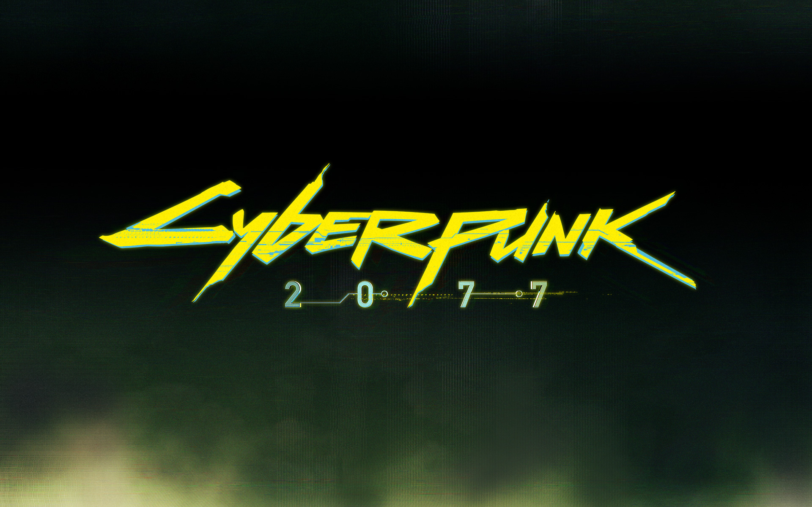
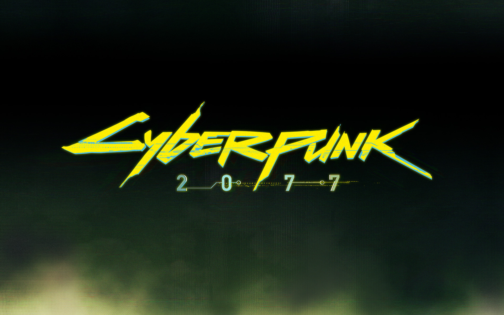
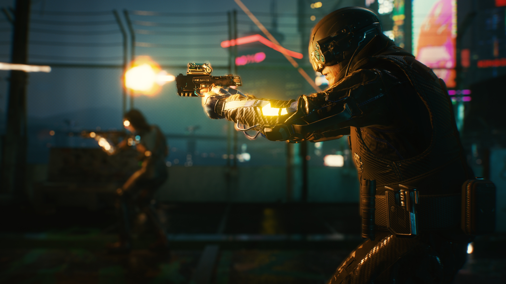
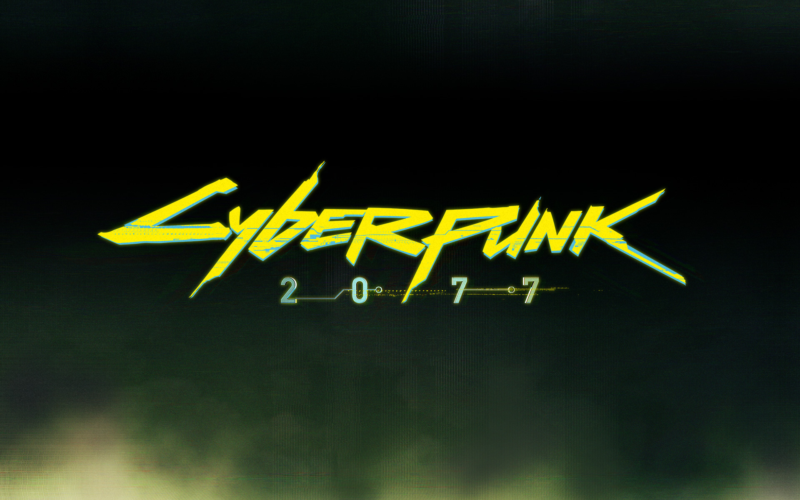
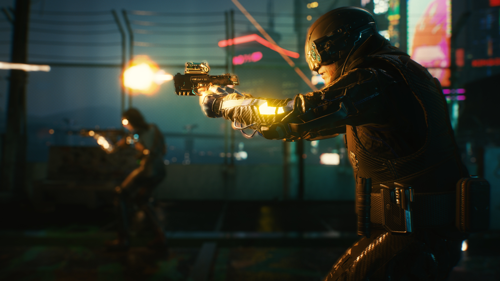
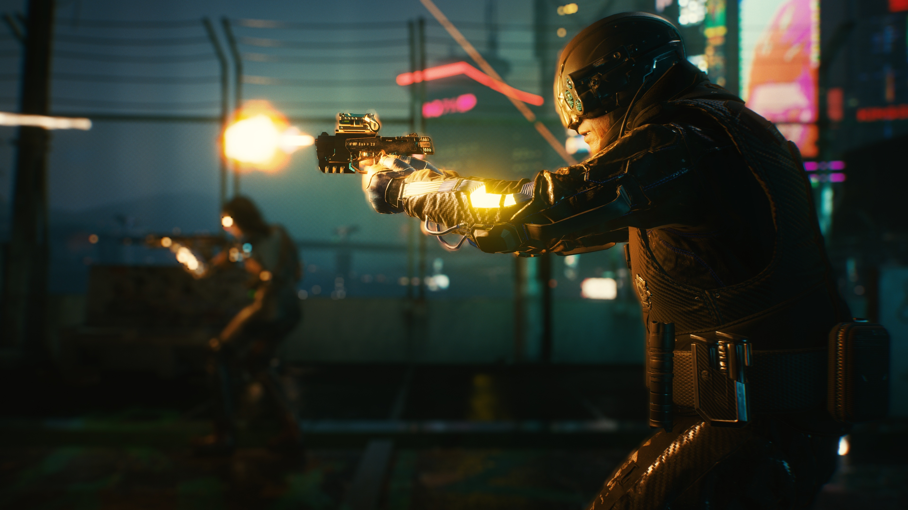
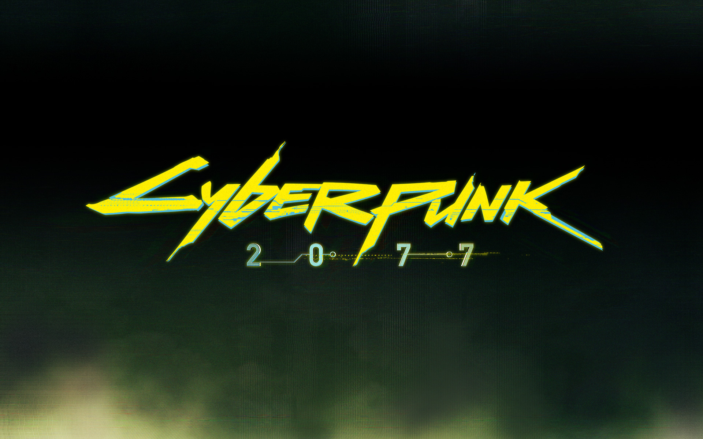
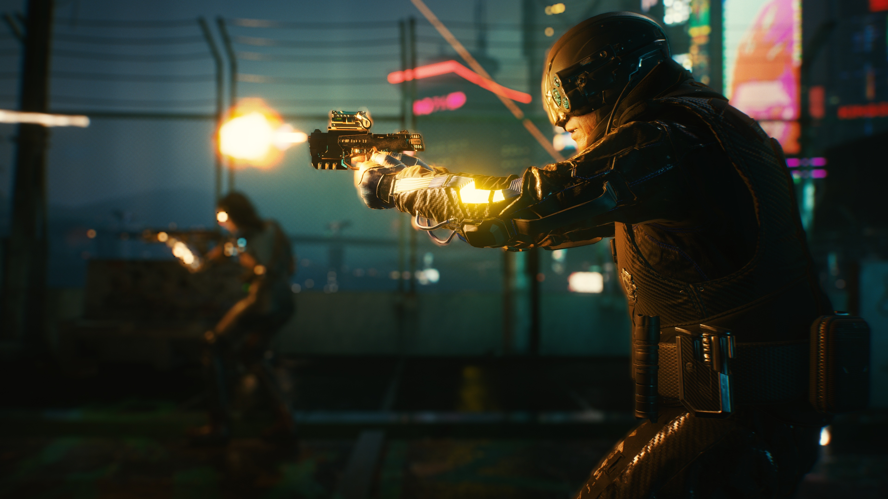

 





"Cyberpunk 2077" é um jogo de RPG de ação desenvolvido pela CD Projekt Red e lançado em dezembro de 2020. Este jogo se passa em um mundo distópico e futurista chamado Night City, que é um ambiente ciberpunk repleto de tecnologia avançada, crime, corrupção e personagens complexos. Linguagem de Programação: Para criar "Cyberpunk 2077," a CD Projekt Red utilizou principalmente a linguagem de programação C++. O C++ é conhecido por seu desempenho eficiente e flexibilidade, sendo uma escolha comum na indústria de jogos para desenvolver jogos complexos e visualmente impressionantes. REDengine: O jogo foi construído na REDengine, uma engine de desenvolvimento de jogos desenvolvida internamente pela CD Projekt Red. A REDengine é notável por sua capacidade de criar ambientes vastos e detalhados, suportar gráficos avançados e proporcionar física realista. Isso é fundamental para criar o mundo vasto e imersivo de Night City. Keanu Reeves: Uma das curiosidades marcantes de "Cyberpunk 2077" é a participação do renomado ator Keanu Reeves. Ele interpreta o personagem Johnny Silverhand, que se tornou um dos pontos de destaque do jogo e gerou grande entusiasmo entre os fãs. Lançamento Controverso: "Cyberpunk 2077" teve um lançamento conturbado, especialmente nas versões para consoles de última geração. Muitos jogadores enfrentaram problemas técnicos e bugs que afetaram a experiência de jogo. A CD Projekt Red respondeu rapidamente a esses problemas e se comprometeu a lançar atualizações para melhorar a estabilidade e a jogabilidade. Apesar dos desafios enfrentados após o lançamento, "Cyberpunk 2077" permanece um dos jogos mais aguardados dos últimos anos, graças ao seu mundo rico em detalhes, narrativa não linear e complexa, além de sua ambientação ciberpunk intrigante. É um exemplo de como a tecnologia e o desenvolvimento de jogos podem criar experiências de entretenimento imersivas, mesmo que o caminho até o lançamento seja repleto de obstáculos.